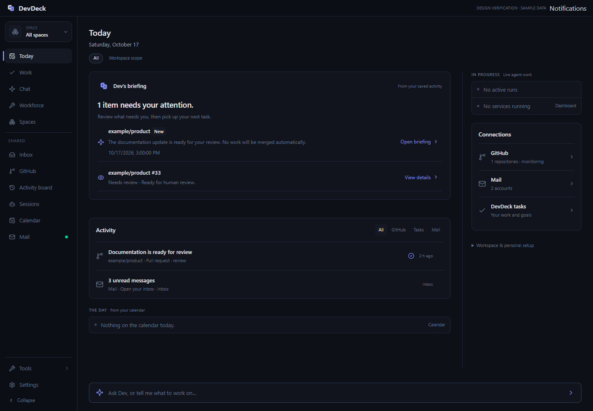
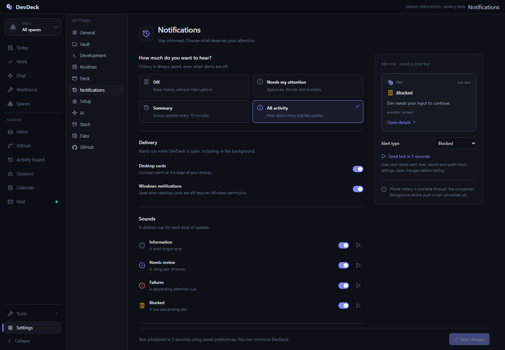
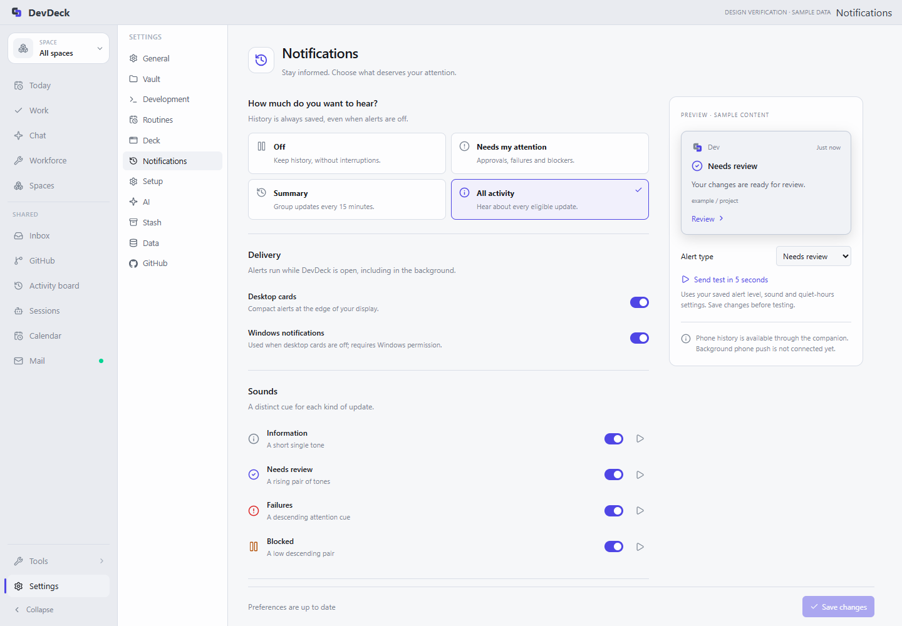
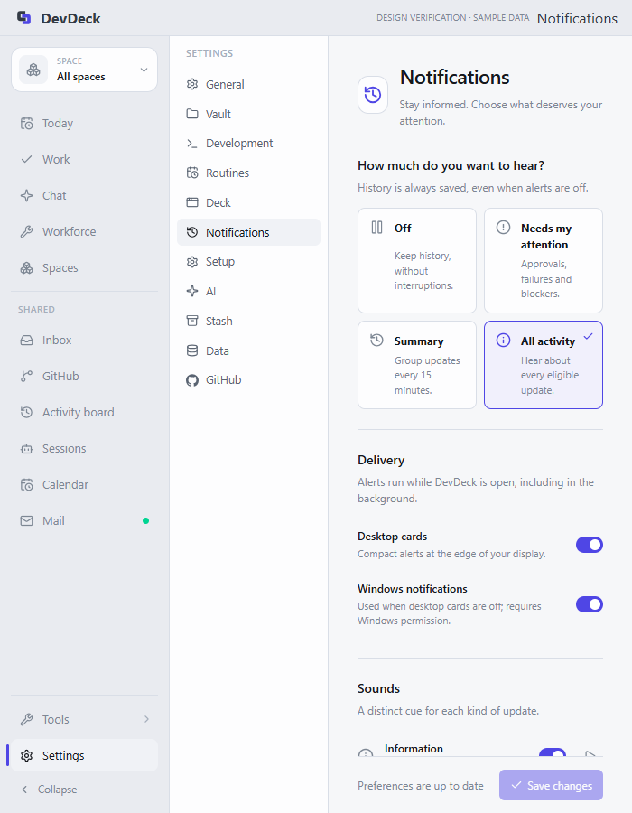

Desktop design implementation
17 October 2026. First approved layout, Link logo, compact icon actions and dedicated notification preferences.
Decision log · Approved visual direction
Implemented
- Today: Dev briefing, filtered GitHub/task/mail activity, in-progress work, connections, main-chat entry; secondary setup collapsed.
- One repository snapshot shared by dashboard surfaces. Real activity is used; screenshots below use clearly labelled fixtures.
- Dedicated Settings → Notifications: alert levels, delivery toggles, per-category sound previews, quiet hours, muted sources, delayed test and visible save state.
- Link vector in header, widget and notification cards. Generated desktop icon assets; native Windows executable rebuilt and restarted.
- Notification history, dismissal, filtering and approval actions retained.
Checks passed
- Dashboard activity source filtering and Mail routing.
- Notifications page through actual Settings navigation; save, reload, category-preserving test command.
- Light-theme and narrow layout, no browser page errors.
- Notification regressions: delivery, dismissal retains history, read state survives reload, Off suppresses cards.
- Native cargo build passed; rebuilt development executable running.
- TypeScript build and Git diff whitespace check passed.
Windows executable icon
The first extraction exposed a stale embedded resource. Added an explicit icon-directory build dependency, rebuilt successfully, and verified the Link mark by extracting the final executable resource directly. DevDeck was restarted. Existing pinned shortcuts to a different installed build are not modified.
Today · fixture data

Notifications · actual settings component, fixture persistence

Light theme

Narrow desktop window

Limits
- Full minimized-alert and sound-category end-to-end tests were deferred by the user during design review. User reported seeing an alert and hearing a sound.
- Browser preference persistence tests use a local IPC fixture; these are not claims of another native database test.
- Main-chat conversation consolidation and background phone push remain separate work. The dashboard chat entry opens the existing main chat.
- No merge, deployment or push. Changes remain uncommitted.
- Icon generation also produced unused mobile icon assets. Automatic approval review rejected their optional cleanup; they were left untouched.